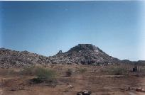

All images are protected by copyright. Consult the copyright page for more information. No images may be reproduced without the consent of the respective copyright holders unless mentioned otherwise.
On the 24th morning, Mehta, Jacob, Joju and I left for Jodhpur. We decided to take a bus rather than the train to catch some of the scenery. The trip was scheduled to be 7 hours, but it took 8 hours in all.
We made many stops on the way, Ajmer being the largest city, but by no means the longest stop. The ride wasn't uncomfortable, but it wasn't smooth enough to get enough good pictures.
 The landscape is excellent, we passed through plains, plateaus, dry lands, fields and the Airavali mountain range. Among the most interesting things I saw was a cellular phone tower right in the middle of nowhere. The photo didn't come out too well unfortunately. I also saw peacocks and deer as we approached Jodhpur.
We didn't eat any food on the bus, just filled ourselves with grapes, oranges, peanuts and biscuits - all bought on the way. We also decided that we were going to brave it the rest of the trip and eat the local food, and drink the local water... bottled water isn't that great anyway.
We weren't planning on touring Jodhpur just yet. It's just that it was the only way for us to get to Jaisalmer. The first thing we did was to get to the railway station and book our tickets around. To and from Jaisalmer, and then bring back our return to Mumbai by one day - to allow for watching the India-Pakistan match at home.
We spent about 45 minutes in there, and then went down to the railway station. We didn't get a hotel room, so just used the railways waiting room to wash up, and left our bags in the railway locker. Then went for a walk around Jodhpur looking for a cybercafe and dinner.
Found both some distance away, and each of us took half an hour to clear all the junk out of our inboxes, then went for dinner to hotel Priya. Had a Marwari Thali - I love unlimited food - and then headed back. At this time, Joju decided that the water wasn't agreeing with him, so decided to switch to bottled water.
We got to a shop that had Kingfisher and Bisleri. The shopkeeper complained
that no one bought Bisleri anymore, and most of us prefer that other product
that comes out of Kingfisher anyway  . Joju got a bottle of Kingfisher water and then stopped at a
chemist for some Pudin Hara - which Mehta finished.
. Joju got a bottle of Kingfisher water and then stopped at a
chemist for some Pudin Hara - which Mehta finished.
Back to the railway station, had to wait half an hour for our 11:15 train to Jaisalmer. Finally, got on the train - it was full of BSF jawans ready to join their squads in Jaisalmer - and caught some sleep. The train was scheduled to reach at 5am, but it was one our late. We were glad
{kind=link}